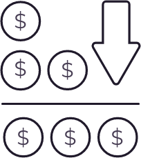

<section id="concept" class="features">
	<div class="features-container wrapper">
		<h3 class="features__title">WE ARE PRESENTING <span class="--primary">BCT</span> TOKEN</h3>
		<div class="features__description --large">Security token, supported by a portfolio of shares of the most successful private companies <br> of the IT-market.</div>
		<div class="features__list">
			<div class="features__item">
				<div class="item__img"></div>
				<div class="item__title --bold">Basis cost</div>
				<div class="item__description">BCT - has a basic redemption price. You can always sell BCT at a profitable course at the Basecore.</div>
			</div>
			<div class="features__item">
				<div class="item__img"></div>
				<div class="item__title --bold">Stable growth</div>
				<div class="item__description">BCT - has a stable growth, due to the growth of a profitable portfolio of shares.</div>
			</div>
			<div class="features__item">
				<div class="item__img"></div>
				<div class="item__title --bold">Private companies</div>
				<div class="item__description">BCT - secured by assets of private IT companies - profit from investments in which can reach 200-500% per year.</div>
			</div>
		</div>
	</div>
</section>